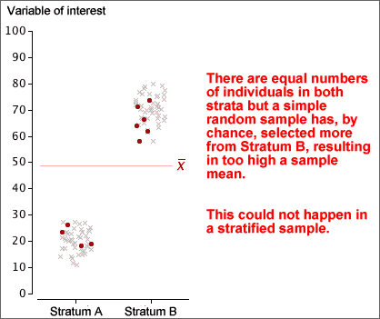

If you don't want to print now,
A simple random sample of individuals from a population is the easiest sampling scheme to understand, but other sampling schemes may give more accurate estimates of population characteristics.
Grouping of individuals
If the individuals in the population can be split into different groups (called strata in sampling terminology), it is often better to take a simple random sample within each separate group than to sample randomly from the whole population. This is called a stratified random sample.
The proportion sampled from the different strata are usually fixed to be the same as the proportions of individuals in the strata in the population. In a simple random sample, the proportions sampled from the strata might not match the population proportions, so a stratified random sample should be more 'representative'.

Sampling frame
Before taking a simple random sample or stratified random sample, a complete list of all individuals in the target population must be available. This is called a sampling frame.
Cluster sampling
If a complete sampling frame is not available, it may be possible to group the target individuals into reasonably small groups, called clusters, for which a complete list is available.
Clusters are similar to the strata that are used for stratified sampling, but are usually much smaller. For example, a cluster might contain all of the houses in a street, or all of the individuals in a household. It is not necessary to know beforehand how many individuals are in each of the clusters.
For cluster sampling, a simple random sample of clusters is selected, with all individuals in these clusters selected.
Cost advantages
Even when a complete sampling frame is available, cluster sampling might be used to reduce the cost of sampling (or to increase the sample size for the same cost) since it is often cheaper to record information from individuals in the same cluster than from different parts of the sampling frame.
Accuracy of cluster sampling
The disadvantage of cluster sampling is that estimates are usually less accurate than the corresponding estimates from a simple random sample of the same size.
However the cost advantages would permit a larger sample size, so cluster sampling may give the best estimates for a fixed cost.
Sampling from large populations
Two-stage sampling is a sampling scheme that is related to cluster sampling, but is of most use for large populations when the individuals are very widely separated in some sense. For example, many polls are conducted to obtain national information about voting intentions or consumer purchases, and there is a high cost associated with travelling between different regions.
In two-stage sampling, the population is separated into groups of adjacent individuals called primary sampling units. These primary sampling units are typically large — for example a country might be split into 20 or more regions. A small number of these are selected according to some sampling scheme, then individuals are sub-sampled within each selected primary unit.
Costs are reduced by limiting sampling to a small number of primary units. For example, if individuals are only sampled from within say 5 regions, travelling and accommodation costs will be considerably reduced.
Estimation
The aim of sampling is usually to estimate one or more population values (parameters) from a sample. Because we do not have complete information about the population, the estimate is unlikely to be exactly same as the value that we are estimating, so we call the difference the error in the estimate. There are different kinds of error.
Sampling error
We have presented four different ways to sample from a population
Each of these involves randomness in the sample-selection process. The error caused by randomness in the sampling process is called sampling error.
Non-sampling error
When sampling from some types of population — especially human populations — problems often arise when conducting one of the above sampling schemes. For example, some sampled people are likely to refuse to participate in your study.
Such difficulties also result in errors and these are called non-sampling errors. Non-sampling errors can be much higher than sampling errors and are much more serious.
It is therefore important to design a survey to minimise the risk of non-sampling errors.
'Missing' responses
The first two types of non-sampling error are caused by failure to obtain information from some members of the target population.
Coverage error
Coverage error occurs when the sample is not selected from the target population, but from only part of the target population. As a result, the estimates that are obtained do not describe the whole target population — only a subgroup of it.
Non-response error
In many surveys, some selected individuals do not respond. This may be caused by ...
If non-response is related to the questions being asked, estimates from the survey are likely to be biased.
'Inaccurate' responses
The next two types of non-sampling error are caused by inaccurate information being obtained from the sampled individuals.
Instrument error
Instrument error usually results from poorly designed questions. Different wording of questions can lead to different answers being given by a respondent. The wording of the question may be such as to elicit some particular response (a leading question) or it may simply be carelessly worded so that it is misinterpreted by some respondents.
Interviewer error
Interviewer error occurs when some characteristic of the interviewer, such as age or sex, affects the way in which respondents answer questions.
There are various different ways to collect information from human populations. Each method has its advantages and disadvantages.
Telephone
Mailed questionnaire
Interviewer
Houses are rarely selected at random. Often streets are randomly selected and every 5th or 10th house in the street is approached. This is called a systematic sample.
Street corner
Some surveys are conducted by approaching people in busy shopping centres or similar public places.
To reduce coverage errors, a quota sample is often used. Each interviewer is told to interview fixed numbers of old, young, male, female, etc. respondents to match the corresponding proportion in the target population.
Self-selected
Phone-in or mail-in surveys are often conducted by radio stations and magazines. The respondents are usually so unrepresentative that the results are meaningless. These types of survey should be avoided.
Worst-case standard error
The standard error of a sample proportion, p, has standard error

This is greatest when π = 0.5 and this provides a worst-case value for the standard error. Whatever the value of π, the standard error of the estimate will be less than

The '±' values of the 95% confidence intervals for all proportions reported in the poll will be less than this value — sometimes considerably less.
How much data do I need to collect?
Consider estimation of a population mean, µ, from a random sample of size n. A 95% confidence interval will be of the form

If we want our estimate to be within k of µ with probability 0.95, then we need n to be large enough that

Provided we can make a reasonable guess at the likely value of the sample standard deviation, s, it is possible to determine the necessary sample size by trial-and-error in the above inequality.
Equation for the sample size
If n is reasonably large the t-value in the inequality will be approximately 1.96, so

This inequality can be re-written in the form

In practice, it is best to increase n a little over this value in case the sample standard deviation was wrongly guessed.
Example
If we expect that a particular type of measurement will have a standard deviation of about 8, and we want to estimate its mean, µ, to within 2 of its correct value with probability 0.95, the sample size should be

If we want our estimate to be within k of π with probability 0.95, then we need n to be large enough that

In order to use this inequality, we need a guess at the value of p — it does not need to be particularly accurate.
A small pilot survey is often conducted to obtain a preliminary estimate for the proportion.
If we can do no better, the 'worst-case' value, p = 0.5 can be used, but the resulting sample size may be higher than needed.
Equation for the sample size
The inequality can be re-written in the form

Example
To estimate a proportion with 95% confidence of being within 0.04 of the correct value, we need

Without a better guess at the value of p, we can use p = 0.5, giving a sample size of 625 or more. If we had a rough idea of the likely value of p, the sample size could be reduced from this worst-case value.